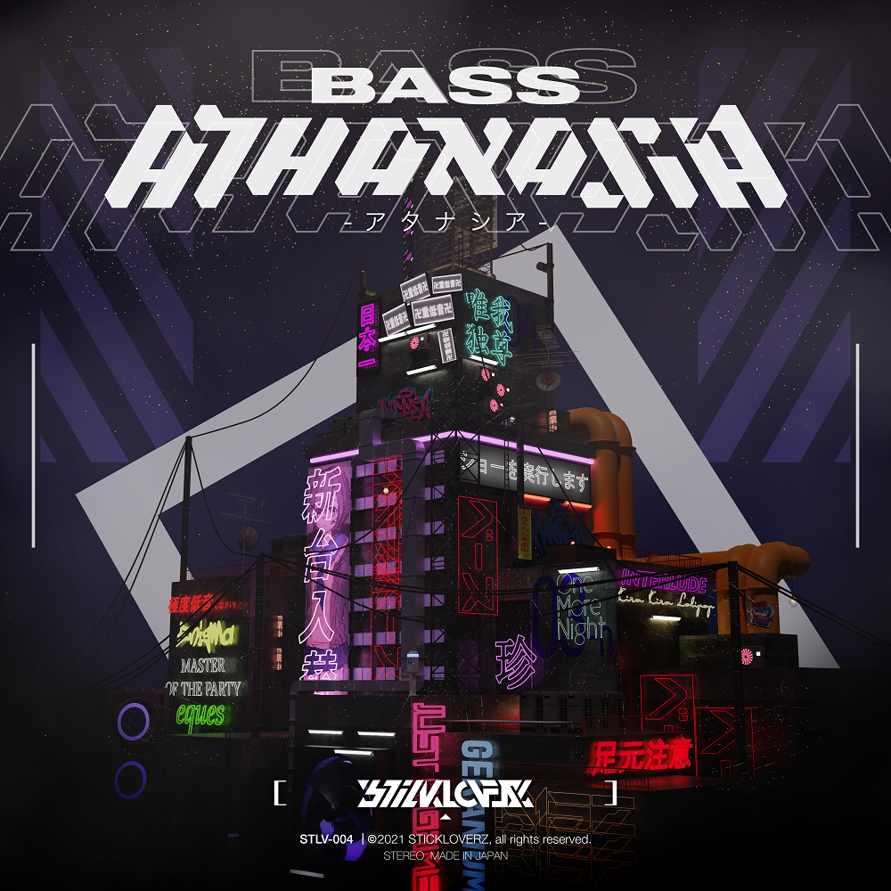

eques

2021/10/31
material- music/FL Studio jacket/blender,aviutl
concept-
STICKLOVERZの4thアルバム『BASS ATHANASIA』にて参加した作品。"BASS"をテーマにし、壮大な雰囲気のfauture riddimを制作した。
ジャケットはネオン街を意識し3DCGでステージを作成した。ネオン管にはアルバムに収録されている曲名を掲載している。
link:SoundCloud
credit-
アルバムロゴ制作:moyu